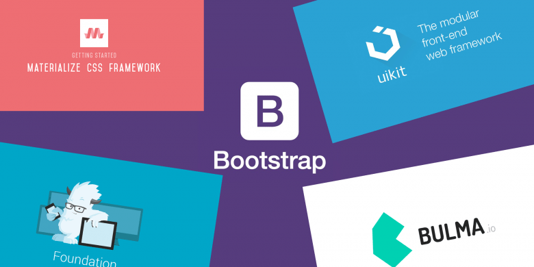

Frameworks CSS
Guía completa sobre frameworks CSS modernos
Guía completa sobre frameworks CSS modernos
Son bibliotecas de código predefinido que facilitan el diseño y la maquetación de páginas web al proporcionar estilos, componentes y patrones de diseño reutilizables. Su principal función es ayudar a los desarrolladores a crear sitios web rápidamente sin tener que escribir código CSS desde cero para cada elemento.
Estos frameworks están diseñados para ser lo suficientemente completos como para crear sitios web completos. Incluyen una amplia variedad de herramientas y componentes listos para usar, lo que permite un desarrollo rápido y flexible. Son ideales cuando se requiere construir sitios web completos con una arquitectura ya definida.
Estos frameworks están enfocados en ofrecer herramientas para un propósito específico dentro del desarrollo web. Ya sea para gestionar rejillas de diseño, crear interfaces gráficas o controlar aspectos particulares de la funcionalidad del sitio. Son ideales para proyectos que requieren una solución más especializada sin la necesidad de un marco completo.

Bootstrap es uno de los frameworks más populares en el desarrollo web. Combina herramientas de CSS, JavaScript y componentes listos para usar, permitiendo crear interfaces de usuario modernas, limpias y totalmente adaptativas. Con su diseño responsive, garantiza que los sitios web se vean y funcionen perfectamente en cualquier dispositivo, desde computadoras de escritorio hasta teléfonos móviles. Bootstrap incluye una variedad de plantillas y componentes como botones, formularios, navegación, grids, y más, lo que facilita y acelera el proceso de desarrollo, sin necesidad de escribir código desde cero. Es ampliamente utilizado por desarrolladores debido a su facilidad de uso, flexibilidad y comunidad activa.
Foundation es un poderoso marco frontend que proporciona herramientas avanzadas para el diseño de interfaces de usuario responsivas. Ofrece una amplia variedad de componentes HTML y CSS que permiten a los desarrolladores crear sitios web flexibles y adaptativos, adecuados para cualquier dispositivo. Además de sus componentes básicos, Foundation incluye opciones de JavaScript que facilitan la personalización de funcionalidades, como menús interactivos y modales. Es conocido por su flexibilidad y por su enfoque modular, lo que permite a los desarrolladores seleccionar solo los componentes que necesitan. Foundation es ideal para proyectos que requieren una gran personalización y control sobre el diseño y el comportamiento de las interfaces.
El desarrollo web es el proceso de crear sitios web y aplicaciones accesibles a través de internet. A continuación se presenta un ejemplo básico de cómo crear una estructura simple de página web utilizando HTML: